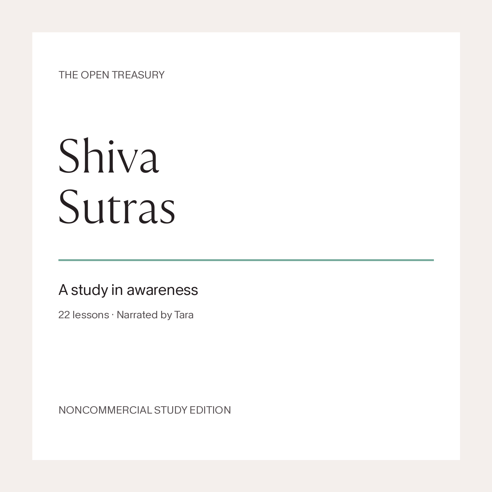

THE OPEN TREASURY · NARRATED BY TARA
Shiva Sutras
A study in awareness
22 lessons · 4 hours 6 minutes · All 77 sutras explained

Study Kashmir Shaivism through the Shiva Sutras, then compare its view, methods and fruit with Dzogchen, Sri Aurobindo, Ramana Maharshi, Nisargadatta and Meister Eckhart. The comparisons keep the differences visible rather than treating these traditions as interchangeable.
Noncommercial study edition. Original course writing and narration: CC BY-NC 4.0. Third-party expression retains its own rights. This audio is not CC0. No endorsement by source authors, teachers or translators is implied.
AI narration. Sanskrit, Tibetan and German pronunciation remains approximate, with some long roots and names less clear than the English. Exact kala vowel length remains unverified. All 77 roots are explained, but Sanskrit recital is selective. This is a study aid, not practice transmission or realization certification.
Listen in order
Lesson 02: A flash is not a separate world
12 min 37s · AI narration · CC BY-NC 4.0, third-party rights separateListen or download MP3Lesson 03: States, wonder, and the power of will
15 min 39s · AI narration · CC BY-NC 4.0, third-party rights separateListen or download MP3Lesson 04: The world as body, and the problem with a beautiful slogan
13 min 09s · AI narration · CC BY-NC 4.0, third-party rights separateListen or download MP3Lesson 05: What to do with the impossible claims
10 min 51s · AI narration · CC BY-NC 4.0, third-party rights separateListen or download MP3Lesson 06: Why a mantra is more than a sound
10 min 42s · AI narration · CC BY-NC 4.0, third-party rights separateListen or download MP3Lesson 07: A larger prison is still a prison
10 min 29s · AI narration · CC BY-NC 4.0, third-party rights separateListen or download MP3Lesson 08: The body as offering, knowledge as food
9 min 23s · AI narration · CC BY-NC 4.0, third-party rights separateListen or download MP3Lesson 09: The limited self and the limits of a method
13 min 33s · AI narration · CC BY-NC 4.0, third-party rights separateListen or download MP3Lesson 10: Who is acting, and who is watching?
10 min 13s · AI narration · CC BY-NC 4.0, third-party rights separateListen or download MP3Lesson 11: Stability, the lake, and the return of language
8 min 28s · AI narration · CC BY-NC 4.0, third-party rights separateListen or download MP3Lesson 12: Oil through the three states
10 min 13s · AI narration · CC BY-NC 4.0, third-party rights separateListen or download MP3Lesson 13: Life, speech, gift, and the right to teach
9 min 19s · AI narration · CC BY-NC 4.0, third-party rights separateListen or download MP3Lesson 14: A world of Shakti, a life with pain
9 min 26s · AI narration · CC BY-NC 4.0, third-party rights separateListen or download MP3Lesson 15: Cosmic claims and ordinary activity
8 min 51s · AI narration · CC BY-NC 4.0, third-party rights separateListen or download MP3Lesson 16: What ends, what remains, and what was never made
9 min 31s · AI narration · CC BY-NC 4.0, third-party rights separateListen or download MP3Lesson 17: Dzogchen and Kashmir Shaivism, resemblance without substitution
11 min 23s · AI narration · CC BY-NC 4.0, third-party rights separateListen or download MP3Lesson 18: The Mother, and what recognition leaves to transform
12 min 02s · AI narration · CC BY-NC 4.0, third-party rights separateListen or download MP3Lesson 19: Ramana is more than the first sutra
10 min 52s · AI narration · CC BY-NC 4.0, third-party rights separateListen or download MP3Lesson 20: Nisargadatta, awareness, and the trap in a translated word
10 min 08s · AI narration · CC BY-NC 4.0, third-party rights separateListen or download MP3Lesson 21: Eckhart, isness, and the theology we must not remove
11 min 16s · AI narration · CC BY-NC 4.0, third-party rights separateListen or download MP3Lesson 22: Can you make the comparison without losing the teaching?
13 min 15s · AI narration · CC BY-NC 4.0, third-party rights separateListen or download MP3Sources, rights and narration notes
The course follows a complete 1912 commentary witness and bounded comparative readings. It does not claim a full reading of every modern author mentioned.
Download the full source and rights notes · License and attribution
Read the full source notes here
Shiva Sutras: source, rights and narration notes
The Open Treasury · Narrated by Tara
Course edition, 11 November 2026. Noncommercial study edition.
Scope
This is an original English study course in 22 lessons. It follows the common 77-sutra arrangement of 22, 10 and 45 roots, using a complete traditional commentary witness and several bounded comparisons. All 77 sutras are explained. Sanskrit recital is selective, not a complete recitation of every root.
It is a study aid, not initiation, pointing-out instruction, a new combined practice system, or certification of realization. Religious claims are explained as claims of their sources. They are not medical, financial or legal guarantees. Ethical cautions about human authority are contemporary commentary, not quotations falsely attributed to the historical authors.
What was read
- Ksemaraja, Shiva-sutra-vimarshini, translated by P. T. Shrinivas Iyengar, Allahabad, 1912. Complete commentary, printed pages 1-69; introduction i-xii and preliminary note xiii. This is the main traditional witness. Title and difficult passages were checked against scan images. https://hdl.handle.net/2027/chi.15478405
- The common roots and public annotations were cross-checked against SanskritDocuments and Gabriel Pradipaka's presentation. GRETIL's Varttika was consulted for selected difficult passages, not read as a complete second commentary. Its numbering is not mechanically identical to the course's arrangement. https://sanskritdocuments.org/doc_shiva/shivasutra.itx ; https://www.sanskrit-trikashaivism.com/en/shiva-sutras-normal-translation-complete-trika-scriptures-non-dual-shaivism-of-kashmir/545 ; https://gretil.sub.uni-goettingen.de/gretil/corpustei/transformations/html/sa_zivasUtra-with-vArttika.htm
- Sri Aurobindo, The Mother, complete six-chapter treatise, CWSA 32, printed pages 3-26. Not the later letters collected in that volume. https://www.sriaurobindoashram.org/sriaurobindo/downloadpdf.php?id=42
- Ramana Maharshi, Who Am I?, complete essay in the tenth 2004 edition available through Arunachala Ashram. Not the full recorded Ramana corpus. https://archive.arunachala.org/docs/collected-worm/who-ai/essay/
- Mipham Rinpoche, The Essence of Mind, complete short essay. Translated by Adam Pearcey, 2016, with the assistance of Alak Zenkar Rinpoche; Lotsawa House, version 1.2-20220421. https://www.lotsawahouse.org/tibetan-masters/mipham/essence-of-mind
- Nisargadatta Maharaj, I Am That, Acorn 2012 edition. Targeted actual dialogue: chapter 10, page 26; chapter 11, pages 27-28; chapter 12, page 29. Selected foreword and translator/editor notes were checked separately. This was a normal authorized library loan, now returned, not a complete-book reading or unrestricted source. https://archive.org/details/iamthattalkswith0000nisa_k7j4/page/26/mode/2up ; https://archive.org/details/iamthattalkswith0000nisa_k7j4/page/28/mode/2up
- Meister Eckhart, selected scholarship and the primary passages it presents, not a complete reading of the German and Latin critical works. Sources include the Stanford Encyclopedia discussion, including its sections on detachment and fruitful action, and Tollef Graff Hugo's 2024 article in the returned extent. Beccarisi's Isticheit chapter was located bibliographically, not read in full. https://plato.stanford.edu/entries/meister-eckhart/ ; https://www.tandfonline.com/doi/full/10.1080/20465726.2024.2423123 ; https://www.degruyterbrill.com/document/doi/10.1515/9783110193893.4.314/html
Modern Lakshmanjoo extracts and Jaideva Singh's publisher preface are supporting witnesses. Their complete modern books were not read for this course.
Interpretation and difficult readings
The course distinguishes root text, commentary, translator notes, modern scholarship and its own comparisons. Its English study renderings are contextual explanations, not a replacement for a critical Sanskrit edition.
Particular cautions include the seen and absent/void reading of 1.15; seer/seen and alternative world-related interpretations at 1.18; the negative reading at 2.4; vidya-avinasha, the imperishability of knowledge, at 3.18; the word-division discrepancy at 3.24; embodied equality and the body's end at 3.25; the sukhaduhkha/sukhasukha witnesses at 3.33; and common pratimilana versus Iyengar's pratiniryana at 3.45. Differences are not silently reconciled.
Comparisons do not assert that Dzogchen, Shaivism, Ramana, Nisargadatta, Aurobindo and Eckhart share one ontology, method or fruit. They do not rank a tradition as a winner or combine advanced practices from fragments.
Rights and attribution
This is original explanatory writing with selective ancient roots and brief illustrative terms. It is not a continuous reading of modern translations or a redistribution of source books. No pirated source or access-control bypass was used. A lawful reading copy, an official download or public web access is not a reuse license.
Lotsawa House's translation is licensed CC BY-NC 4.0. The Mipham comparison and synthesis use an English explanatory adaptation of that source, not a new translation. Preserve the Mipham/Pearcey/Alak Zenkar/Lotsawa House credit, the source link and the license link. The comparison selects, paraphrases and discusses the source; it does not reproduce its complete translation. No endorsement by the translator, teacher or Lotsawa House is implied. https://www.lotsawahouse.org/about/terms ; https://creativecommons.org/licenses/by-nc/4.0/
Keep the source-derived comparison, combined notes and course presentation noncommercial. For this course, omit advertising, paid access, sponsorship, dana, Buy Me a Coffee and other support solicitations from the course pages and episode notes. This no-support treatment is a conservative condition of this course, not a claim that every donation is legally forbidden by the license.
The audio is not claimed as CC0. This note does not purport to license third-party translations, photographs, recordings, scans or editorial expression. Their rights remain with their respective holders. Source-library screenshots, reference recordings and third-party page images must not be included in the released course.
The historical 1912 witness is not a basis for a worldwide legal guarantee. No assertion is made that research automatically frees protected expression. The distinction between ideas and their expression is relevant, but does not replace judgment about actual use. https://www.copyright.gov/help/faq/faq-protect.html
AI narration and sound processing
The narration is AI-generated. Independent artifact and word checks covered the full course, with focused checks of repaired passages and technical terms. This is not native Sanskrit, Tibetan, German or Norwegian pronunciation certification, and not a claim that every subjective seam was heard and approved by a human specialist.
Pronunciation remains approximate. Some long Sanskrit roots and names are less clear than the surrounding English. In particular, the exact audible long-vowel contrast between kala as limited capacity and kala as time remains unverified, even though the intended phonetic distinction and English explanations are preserved. The negative division vidya-avinase is preserved and recoverable approximately. German Isticheit/Gelassenheit, some Tibetan and Sanskrit names, and several long roots retain intelligibility risks. The versioned review record preserves those flags rather than describing the narration as flawless.
The untouched float masters were retained. Publication copies received gain and oversampled peak limiting only. There was no change to pitch, speaking speed, words or sequence, and no EQ or other compressor. Limiter latency was compensated, not used to change speech timing. MP3 can add tiny endpoint padding; the largest measured difference was 15 samples at 24 kHz, less than a millisecond.
The final 64 kbps mono MP3 copies measure -17.6 to -17.7 LUFS integrated, within the -16 to -18 LUFS target. Their independently oversampled peaks are below -1 dBFS. The raw lesson 19 float master has four samples above nominal full scale; it must not be converted to integer PCM at unity gain. Its publication copy was attenuated in floating point before gain/limiting and checked after encoding.
License for original course writing and narration: CC BY-NC 4.0, https://creativecommons.org/licenses/by-nc/4.0/ . Third-party expression remains subject to its own rights.